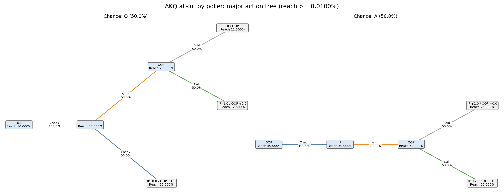
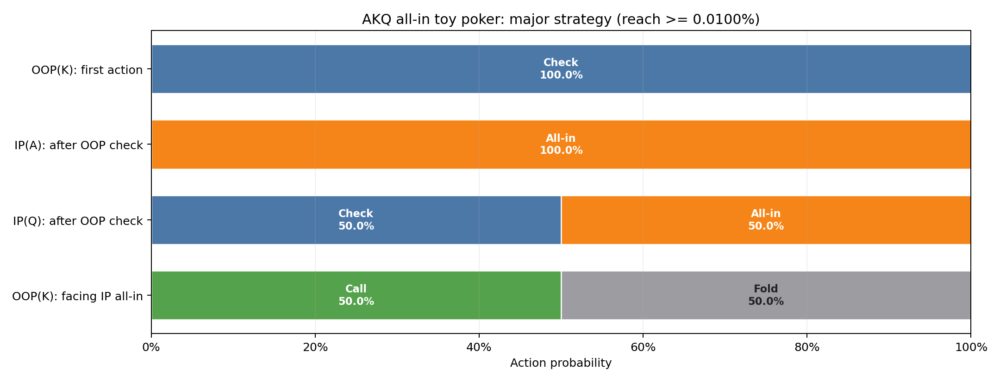
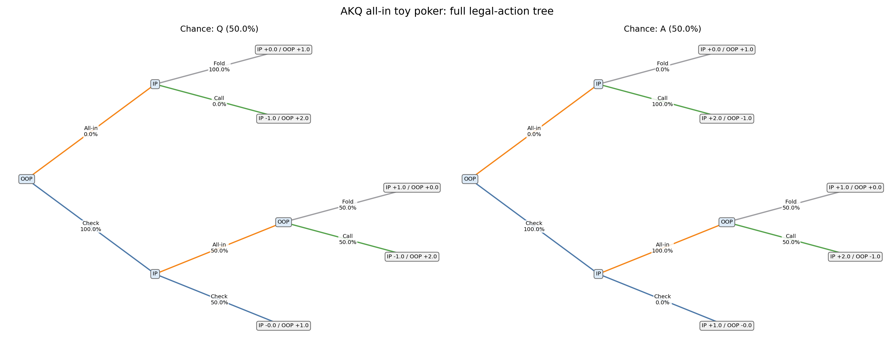
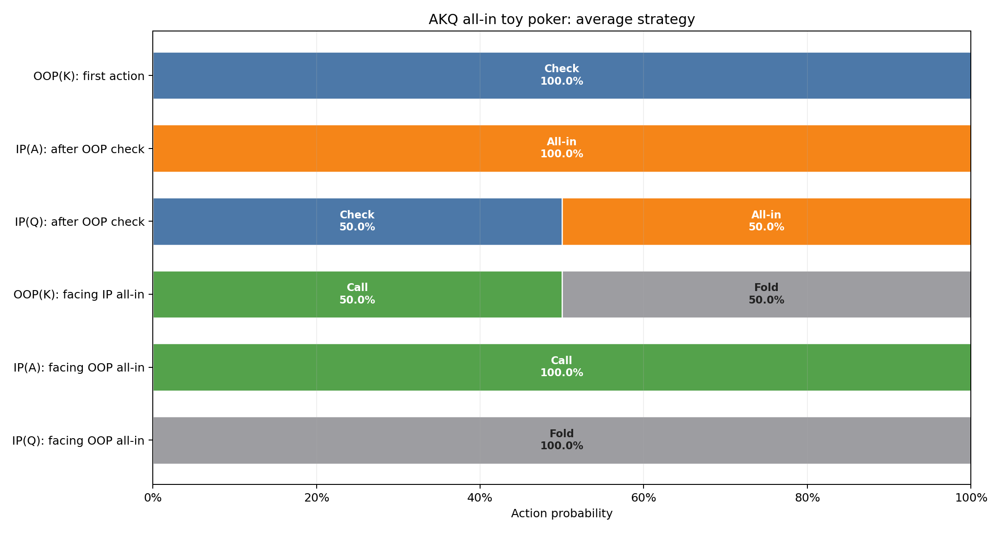
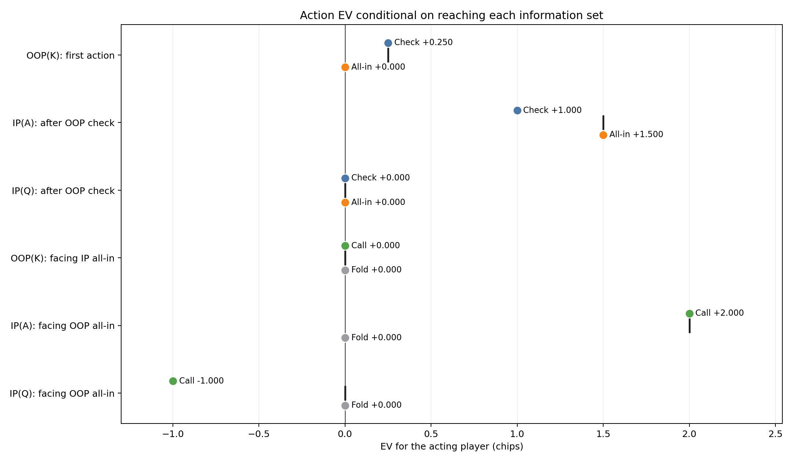
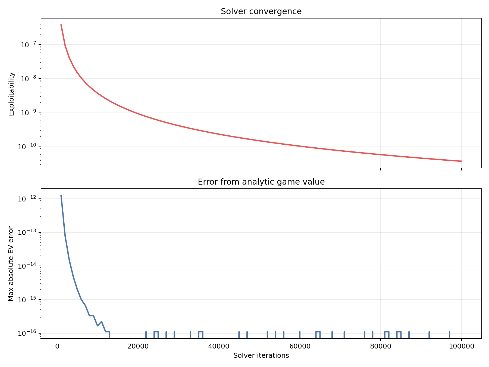

各情報集合へ到達した条件下で、手番プレイヤーの利得EVをchips単位で表示します。 初期potはデッドマネーとして扱います。このゲームの終端利得合計は 1です。
Solver backend: native_efg;
algorithm: cfr_plus;
checkpoint evaluation: native_efg.
Stop reason: max_iterations;
target exploitability: nan;
best checkpoint: 3.749967e-11
at iteration 100,000.
Information sets and tree nodes with reach probability below 0.0100% are omitted here. Showing 4 of 6 information sets. All actions at a retained information set remain visible.


| Decision | Reach | Strategy | Policy EV | Action EV |
|---|---|---|---|---|
| OOP(K): first action | 100.000000% | Check: 100.00% All-in: 0.00% | +0.250000 | Check: +0.250000 All-in: +0.000000 |
| IP(A): after OOP check | 50.000000% | Check: 0.00% All-in: 100.00% | +1.500000 | Check: +1.000000 All-in: +1.500000 |
| IP(Q): after OOP check | 50.000000% | Check: 50.00% All-in: 50.00% | +0.000000 | Check: +0.000000 All-in: +0.000000 |
| OOP(K): facing IP all-in | 75.000000% | Call: 50.00% Fold: 50.00% | +0.000000 | Call: +0.000000 Fold: +0.000000 |


| Decision | Reach | Strategy | Policy EV | Action EV |
|---|---|---|---|---|
| OOP(K): first action | 100.000000% | Check: 100.00% All-in: 0.00% | +0.250000 | Check: +0.250000 All-in: +0.000000 |
| IP(A): after OOP check | 50.000000% | Check: 0.00% All-in: 100.00% | +1.500000 | Check: +1.000000 All-in: +1.500000 |
| IP(Q): after OOP check | 50.000000% | Check: 50.00% All-in: 50.00% | +0.000000 | Check: +0.000000 All-in: +0.000000 |
| OOP(K): facing IP all-in | 75.000000% | Call: 50.00% Fold: 50.00% | +0.000000 | Call: +0.000000 Fold: +0.000000 |
| IP(A): facing OOP all-in off path | 0.000000% | Call: 100.00% Fold: 0.00% | +2.000000 | Call: +2.000000 Fold: +0.000000 |
| IP(Q): facing OOP all-in off path | 0.000000% | Call: 0.00% Fold: 100.00% | -0.000000 | Call: -1.000000 Fold: +0.000000 |

